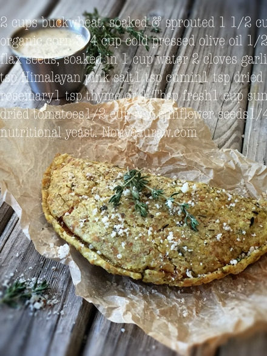

Italian Pizza Pockets

~ raw, vegan, gluten-free, nut-free ~
If you want to take a quick trip to Italy but are low on funds… these Italian Pizza Pockets will take you there instantly, and you won’t suffer from jet lag!
There is something very therapeutic and rewarding when making your food from fresh, living ingredients. There was a time when I never thought such words would flow out of me. As a little girl I would day-dreamingly gaze upon those ole Betty Crocker cookbooks, never feeling that being a home cook was my destiny.
It took quite some time, but I finally got there… but it wasn’t until I ventured into my raw journey. In fact, learning how to be a raw chef has made me a better cook too! I always seem to do things a bit backward.
This bread is moist and pliable when being gentle with it. This isn’t one of those breads where someone across the table hollers, “Hey throw me a piece of bread.” and it goes sailing through the air. It might get some good air, but I don’t think the judges would issue it a score of 10 upon landing. :)
The bread remains soft, flaky, and almost buttery. A good combination if you ask me. Inside the pizza pocket, it is filled with a deep rich pizza-flavored pate. Typically, a filling like this would be made with fresh tomatoes and cooked on the stovetop to create those deep flavors. Since we are keeping foods raw here, I used sun-dried tomatoes which have that deep, concentrated tomato flavor. The dehydrating process of those whole pizza pocket also helps
I know many of you know the magical culinary event that takes place when you dip breadsticks or pizza into ranch dressing and if you don’t… this is a fine time to try it. The cool and bright flavors of the Discovered Valley Ranch Dressing, balance the rich, deep flavors of the pizza filling. Truly a perfect pair. You will end up with a few extra breads. You can either make more pizza filling or use the breads for other sandwich creations. I hope you enjoy this recipe and please leave a comment below. I always love hearing from you! Blessings, amie sue
Yields 6 pizza pockets
Bread dough:
- 2 cups buckwheat, soaked & sprouted
- 1 1/2 cups organic corn, fresh or frozen (thawed)
- 3/4 cup cold-pressed olive oil
- 1/2 cup flax seeds, soaked in 1 cup water
- 2 cloves garlic
- 2 tsp Himalayan pink salt
- 1 tsp ground cumin
- 1 tsp dried rosemary
- 1 tsp thyme or 1 Tbsp fresh
Pizza filling:
- 1 cup sun-dried tomatoes
- 1/2 cup raw sunflower seeds, soaked
- 1/4 cup nutritional yeast
- 1 clove garlic
- 1 Tbsp dried Italian seasoning
- 1 Tbsp fresh lemon juice
- 2 Tbsp cold-pressed olive oil
- 1/2 tsp Himalayan pink salt
Preparation:
Bread dough:
- This amount of dough yields 10 (1/2 cup) 6 1/2″ circular breads.
- The night before I soaked the buckwheat, flax seeds, and corn in three separate bowls. Soaking the corn helps to soften the kernels.
- You can take the buckwheat to the next nutritional level by sprouting them before continuing with the recipe. This will take an extra day or two.
- When you are ready to use the buckwheat, drain and rinse the tarnation out of them. It will take about 5 minutes. Make sure that the water runs clear, and you don’t detect any mucilage dripping from the mesh strainer.
- Strain the corn.
- In a food processor, fitted with the “S” blade, combine the buckwheat, flaxseeds, corn, oil, flax, garlic, salt, cumin, rosemary, and thyme. Process until it reaches a dough-like consistency.
- When adding the soaked flaxseeds, you will add all of it, the seeds and gel that it created while soaking. The seeds won’t totally break down in the batter.
- On non-stick sheets that come with the dehydrator, spread 1/2 cup of batter into a 6 1/2″ circle.
- If you struggle with making perfect circles or question how big 6 1/2″ is… create a template. (shown below).
- Using a black sharpie pen, I took the ring from my Springform pan and traced it onto a piece of paper. You want to use a marker of some sort so you can see it through the non-stick sheet.
- Slide the paper under the non-stick sheet and use this as a template. Move the sheet to all four corners as you make the wraps. Remove the paper when done and save it for your next creation!
- Option: sprinkle extra Italian seasoning on the surface of the wrap before drying.
- Dehydrate at 145 degrees(F) for 1 hour, then reduce the temp to 115 degrees (F) for a few more hours, long enough so they dry enough to turn over onto the mesh sheet and peel cleanly off the non-stick sheet. Continue to dry for another 3or 4 hours or so. Keep an eye on them and test their flexibility. They shouldn’t be tacky when touched and should remain flexible.
- Any leftover wraps should be wrapped individually, slid into a ziplock bag, and stored in the fridge for 5-7 days.
Pizza filling:
- Yields 1 1/4 cups of filling.
- Place the dried tomatoes and sunflower seeds in bowls, covered with enough water to cover them. Allow them to soak.
- Soaking the sun-dried tomatoes helps to soften them for blending purposes.
- Soaking the sunflower seeds softens them and also reduces the phytic acid, making them easier to digest.
- Once ready to construct the dish, drain and discard the soak water from both.
- In a food processor, fitted with the “S” blade, combine the tomatoes, sunflower seeds, nutritional yeast, garlic, seasoning, lemon, oil, and salt. Process until it forms a thick paste.
Assembly:
- Place a wrap in front of you. If the edges dried a bit too much, dip your finger in water and moisten the edges, so they don’t crack.
- Place 3 Tbsp worth of pizza filling on half of the wraps, leaving a 1/4″ border.
- Fold the wrap in half… gently! If any sections of the bread form small crackers or tears, smooth them over with a damp finger. Don’t worry about them needing to look perfect. If you look at cooked pizza pockets, there are times that the filling oozes out during the cooking process, which gives it that rustic yummy look.
- Place the wrap on the mesh sheet and slid it back into the dehydrator at 115 degrees (F) for 2-4 hours.
- They can be eaten right away, but the drying/warming process developed all the rich flavors in the pocket.
- Store leftovers in the fridge, wrapping individually, so they don’t stick to one another.
- You can warm leftovers by placing them back in the dehydrator at 145 degrees (F) for 30-60 minutes.
Culinary Explanations:
- Why do I start the dehydrator at 145 degrees (F)? Click (here) to learn the reason behind this.
- When working with fresh ingredients, it is important to taste test as you build a recipe. Learn why (here).
- Don’t own a dehydrator? Learn how to use your oven (here). I do however truly believe that it is a worthwhile investment. Click (here) to learn what I use.



© AmieSue.com